Disclaimer and Restrictions
The material in this publication is for information only and is subject to change without notice. This material does not constitute a commitment on the part of the development team. Every effort has been made to ensure the accuracy of this manual. However, the information in this document is subject to change without notice. We give no warranty with respect to this documentation and disclaim any implied warranties of merchantability and fitness for a particular purpose. We shall not be liable for any errors or for incidental or consequential damages in connection with the furnishing, performance, or use of this manual or the examples herein.
Contact Us
We are committed to continually improve KeePassXC through customer experience and your feedback is important to us. Please send us your feedback or comments to team@keepassxc.org. To report issues, visit: https://github.com/keepassxreboot/keepassxc.
Thank You,
Team KeePassXC
Chapter 1: Getting Started
KeePassXC is a modern open-source password manager. It is used to store and manage information such as URLs, usernames, passwords, and so on for various accounts on your web applications. KeePassXC stores the passwords in an encrypted format and provides secure access to all the your information with the help of a master password.
KeePassXC is helpful for people with extremely high demands of secure personal data management. It saves many different information, such as user names, passwords, URLs, attachments, and comments in one single database. For a better management, user-defined titles and icons can be specified for different entries in KeePassXC. In addition, the entries are sorted in customizable groups. The integrated search function allows to search in a single group or the complete database.
KeePassXC also provides a secure, customizable, fast, and easy-to-use password generator utility. This utility is very helpful to those who generate passwords frequently.
Downloading KeePassXC
KeePassXC is available for download for the following operating systems and platforms:
-
Linux - Official Cross-Distribution Packages
-
AppImage
-
Snap Package
-
-
Linux - Distribution-Specific Packages
-
Ubuntu
-
Debian
-
Arch Linux
-
Gentoo
-
Fedora
-
CentOS
-
OpenSUSE
-
-
macOS
-
DMG Installer
-
Homebrew Cask
-
-
Microsoft Windows
-
64-bit - Portable and MSI Installer
-
32-bit - Portable and MSI Installer
-
To download the KeePassXC installer for the desired platform, visit https://keepassxc.org/download.
| KeePassXC is open-source software and may be available on other websites that are unaffiliated with Team KeePassXC. We recommend obtaining this software from https://keepassxc.org only if you are in doubt. |
Before installing KeePassXC, it is recommended that you verify that your downloaded installer matches the signature, which is published alongside the release package. By verifying the signatures of KeePassXC releases, you can verify the authenticity and integrity of the downloaded installation file. This guarantees that the file you downloaded was originally created by the KeePassXC Team and its contents have not been tampered with.
To know more about the steps to verify the authenticity and integrity of your downloaded package, visit https://keepassxc.org/verifying-signatures.
The Windows MSI installer is signed by a secure certificate owned by DroidMonkey Apps, LLC. If you do not see this dialog when installing the application, click DENY and download the installed again from https://keepassxc.org.
Installing KeePassXC
Installing KeePassXC is a simple process. In the following example, installation steps for KeePassXC on Microsoft Windows are described. Installing KeePassXC on other operating systems is also a simple process, which you can accomplish by using the native installers. To know more about the installation instructions on the other operating systems, refer to the KeePassXC User Manual.
To install KeePassXC on Microsoft Windows, perform the following steps:
-
Double click on the KeePassXC-Y.Y.Y-WinZZ.msi file. Here, Y.Y.Y represents the version of the software and ZZ represents the 32-bit/64-bit version of the Microsoft Windows operating system.
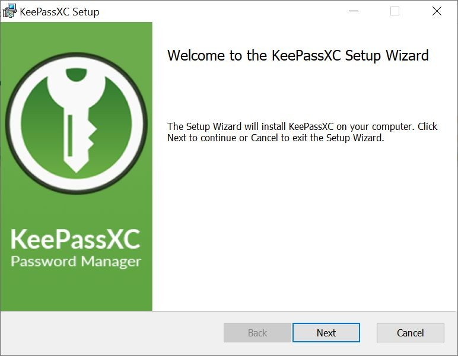 -
Click Next and follow the simple instructions on the KeepPassXC Setup Wizard to complete the installation.
Creating Your First Database
To start using KeePassXC, you need to first create a database that will store the password and other details.
To create a database, perform the following steps:
-
Open your KeePassXC application. The following screen appears:
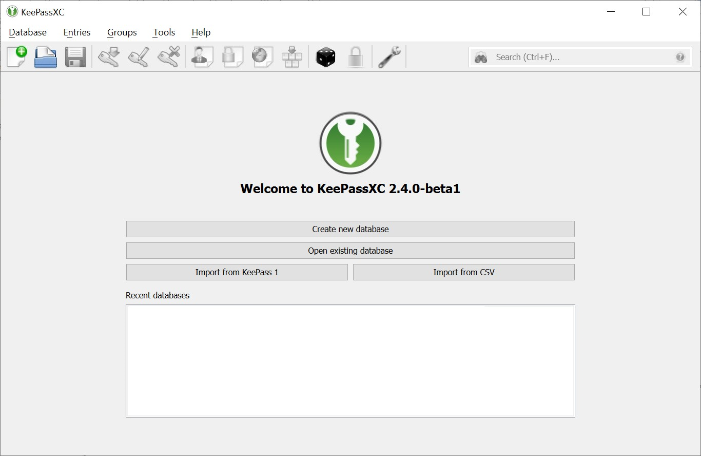 -
Click the Create new database button. The General Database Information screen appears.
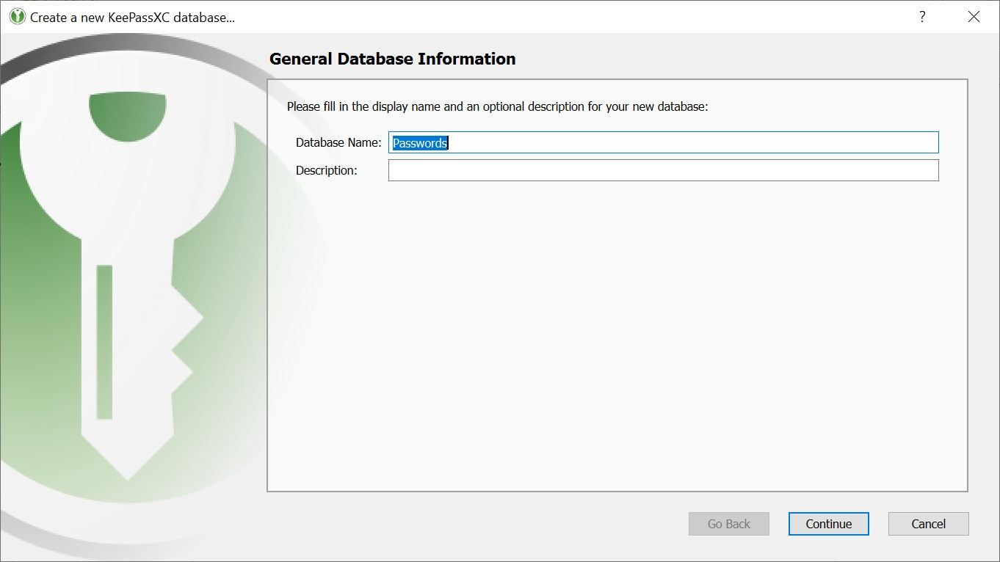 -
Enter a name for your database in the Database Name field. If you do not enter a name in this field on this screen, you will be prompted to provide a name when you finish creating the database.
-
(Optional) Enter desired details in the Description field.
-
Click Continue. The Encryption Settings screen appears.
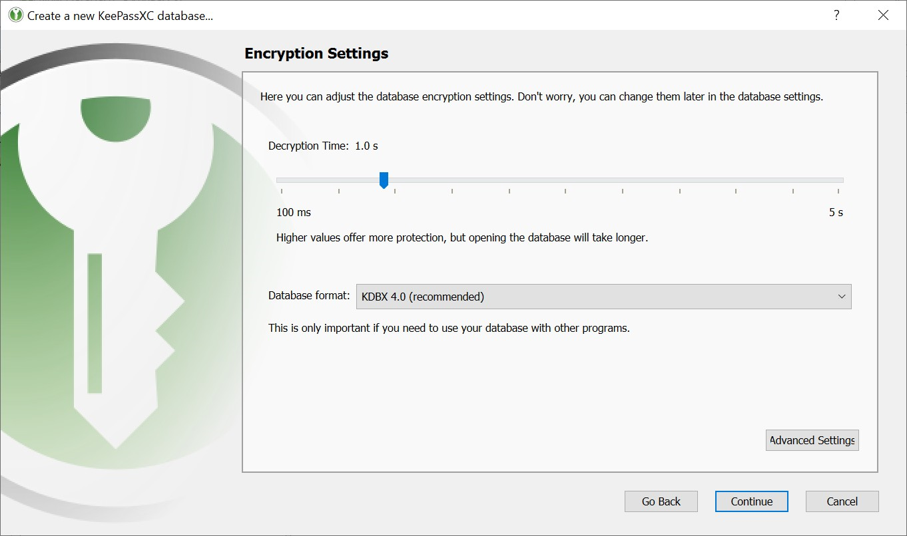 -
Drag the Decryption Time slider based on your encryption strength of your database. Setting the Decryption Time slider at a higher values means that the database will have higher level of protection but the time taken by the database to open will increase.
-
Select the Database format from the following options available in the drop-down list.
-
KDBX 4.0 (recommended)
-
KBX 3.1
-
-
(Optional) Click the Advanced Settings to provide additional settings for your database.
-
Click the Continue button. The Database Master Key screen appears:
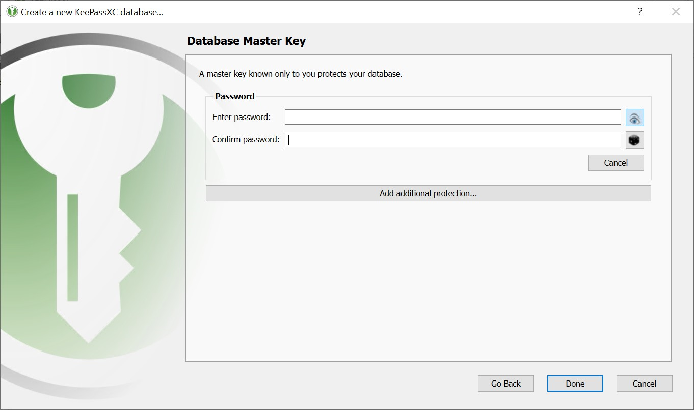 -
Enter a strong password for your database on this screen.
Keep this password for your database safe. Either memorize it or note it down somewhere. Losing the database password might result in permanent locking of your database and you will not be able to retrieve information stored in the database. -
Click Done. You are prompted to select a location to save your database file and complete creating a your database with basic settings. The database file is saved on to your computer with the default .kdbx extension.
Opening an Existing Database
To open an existing database, perform the following steps:
-
Open your KeePassXC application. The following screen appears:
-
Click the Open existing database button.
-
Navigate to the location of the your database on your computer and open the database file. The following screen appears:
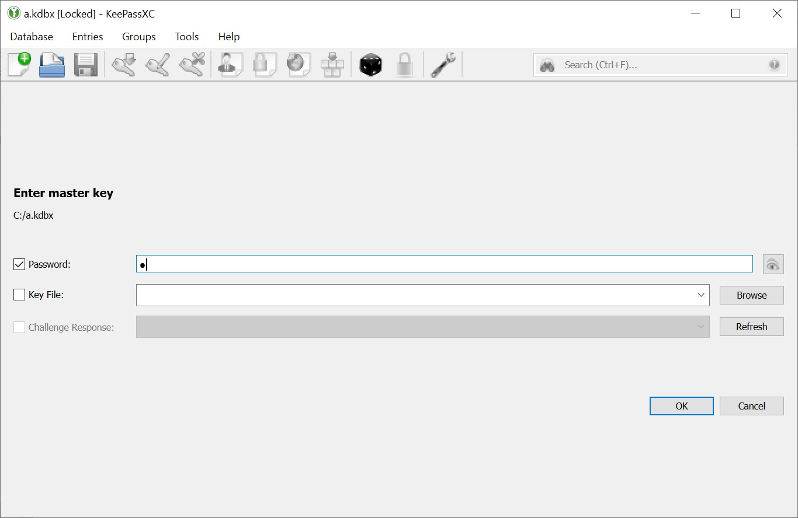 -
Enter the password for your database.
-
Browse for the Key File if you have chosen it as an additional authentication factor while creating the database. Refer to KeePassXC User Guide for more information on setting Key File as an additional authentication factor.
-
Click OK. The database opens and the following screen is displayed:
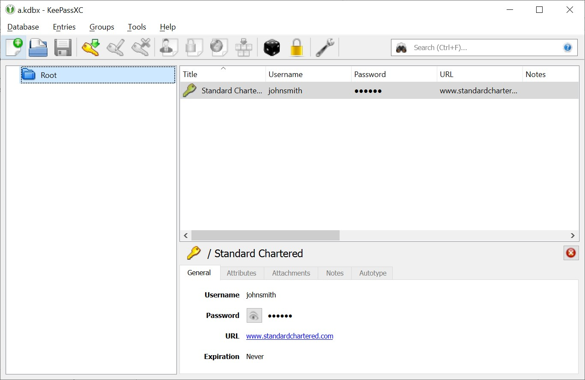
Adding an Entry
All the details such as user names, passwords, URLs, attachments, comments, so on are stored in the database in individual entries. You can create as many entries as you want in the database.
To add an entry, perform the following step:
-
Navigate to Entries > New Entry (Or, press Ctrl+N). The following screen appears:

-
Enter a desired name of the entry, user name, password, and notes on this screen.
-
(Optional) Select Expires check-box to set the expiry date for the password. You can manually enter the date and time or click the Presets button to select a expiry date and time for your password.
-
Click OK.
Editing an Entry
To edit the details in an entry, perform the following steps:
-
Select the entry you want to edit.
-
Right-click and select Edit entry from the menu.
-
Make the desired changes.
-
Click OK.
Deleting an Entry
To delete an entry, perform the following steps:
-
Select the entry you want to delete and press the Delete button on your keyboard.
-
You are prompted to move the entry to Recycle Bin.
The entry is not deleted immediately. The entry moves to the Recycle Bin, which does not exist in KeePassXC by default. It is created dynamically when you delete an entry for the first time. -
To permanently delete the entry, navigate to the Recycle Bin, select the entry you want to delete and press the
Deletebutton on your keyboard.
Chapter 2: Advanced Operations
Importing External Databases
KeePassXC allows your to import external databases from the following options:
-
KeePass 1 Database
-
Comma-Separated Values (CSV) file
Importing KeePass 1 Database
KeePass 1 database is an older format of the database created using legacy version of KeePass. KeePassXC lets your import this older format of the database and you can seamlessly start using this database in your new KeePassXC application.
To import a KeePass 1 database file in KeePassXC, perform the following steps:
-
Open KeePassXC.
-
Click Import from KeePass 1 button on the welcome screen or use the menu Database > Import > KeePass 1 Database.
-
Navigate to the location of the your legacy KeePass 1 database file (
.kdb) on your computer and open the file. You are prompted for the password and the Key file for your.kdbfile. -
Enter the password for your old
.kdbfile and click OK. You are prompted for provide a name for the new database format that KeePassXC recognizes. -
Provide a name for the new database format, select a folder on your computer to save the file, and click Save.
-
The data from the
.kdbfile gets imported and converted to the new format, which is compatible with KeePassXC. You can now start using the new database file (.kdbx) in KeePassXC.
Importing CSV File
If you have been saving your URLs, usernames, passwords, and so on in a CSV file, you can migrate all that information from the CSV file to KeePassXC and start using KeePassXC to maintain your data.
To open the CSV file, perform the following steps:
-
Open KeePassXC.
-
Click Import from CSV button on the welcome screen or use the menu Database > Import > CSV File.
-
Navigate to the location of the your CSV file on your computer and open the file. The new database wizard will appear. Follow the steps of creating a new database in Chapter 1.
-
After saving your new database file, the CSV import wizard will appear:
Insert CSV Wizard image here
Your CSV file gets imported to KeePassXC and the data is converted to the KeePassXC format for further usage and maintenance. The new database file is saved on to your computer with the default .kdbx extension.
KeePassXC-Browser Extension
The KeePassXC-Browser extension is a software plug-in for your web browser that you can use to automatically pull your data from KeePassXC and populate them directly into the fields of your web-based application. It is a very useful plug-in that enhances your productivity by saving time. You do not need to manually copy the data from your KeePassXC database and paste them in the fields in the websites.
The KeePassXC-Browser extension is available on the following web browsers:
-
Google Chrome, Vivaldi, and Brave
-
Mozilla Firefox and Tor Browser
-
Microsoft Edge
-
Chromium
Downloading Browser Extension
You can download the KeePassXC-Browser extension from your web browser. In this section, the step to download the KeePassXC-Browser extension for Google Chrome are described.
To download the KeePassXC-Browser extension, perform the following steps:
-
Open Google Chrome and go to https://chrome.google.com/webstore/category/extensions.
-
In the Search the store field, type KeePassXC-Browser and press Enter. The following screen appears:
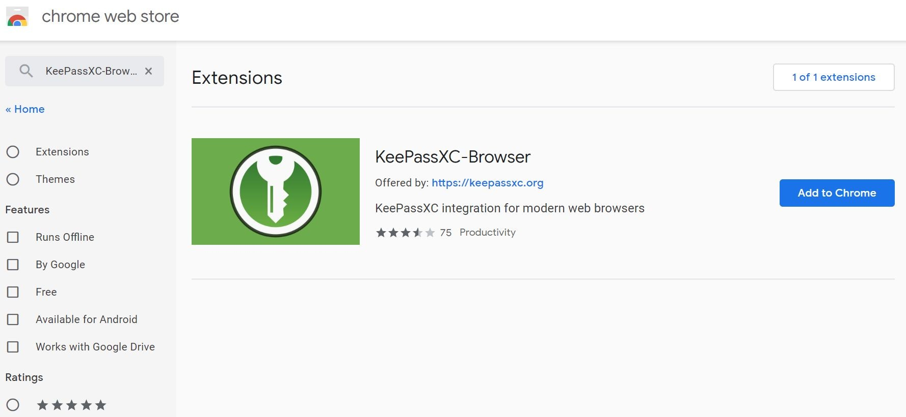 -
From the search results, click on the Add to Chrome button. The following screen appears:
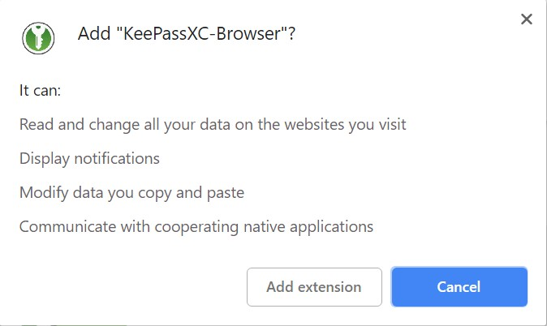 -
Click the Add extension button from the pop-up window. The KeePassXC-Browser extension gets added to Google Chrome.
Configuring KeePassXC-Browser
To start using KeePassXC-Browser, you must configure it so that it can communicate with the KeePassXC application on your desktop.
To configure KeePassXC-Browser, perform the following steps:
-
Open the KeePassXC application on your desktop and navigate to Tools > Settings.
-
Click the Browser Integration option on the left-hand side. The following screen appears:
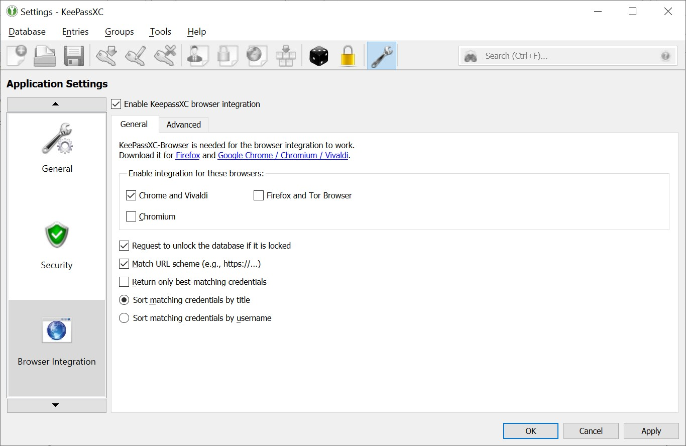 -
Under the Enable integrations for these browsers section, select the browsers for which you have downloaded the KeePassXC-Browser plug-in and click OK.
-
Open your browser for which you have downloaded the KeePassXC-Browser plug-in.
-
Click the KeePassXC-Browser plug-in icon in your browser (see figure). A pop-up window appears as shown in the following screen:
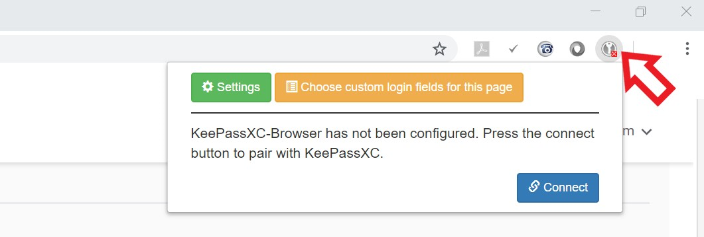 -
Click the Connect button in the pop-up window to complete integrating the KeePassXC-Browser plug-in with your KeePassXC desktop application.
-
If you connect the KeePassXC-Browser for the first time, you are prompted to enter a unique name to identify the connection. Enter a unique name in the field and click the Save and allow access button.
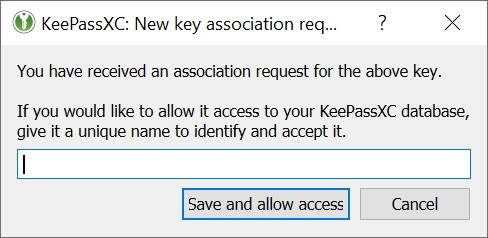
Populating Database Entries to Websites
The KeePassXC-Browser plug-in lets you automatically populate the entries from your KeePassXC database into the fields on the websites. To do so, perform the following steps:
-
Open your KeePassXC desktop application.
-
Open your web browser and open your website for which you have stored the URL, user name and password in the KeePassXC database.
The KeePassXC-Browser plug-in icon in your browser window automatically turns green when you open your KeePassXC desktop application. The green icon indicates that the KeePassXC desktop application is connected and communicating with the KeePassXC-Browser plug-in. The grey icon indicates that the KeePassXC desktop application is not connected with the KeePassXC-Browser plug-in.
ADD CONNECTED/NOT-CONNECTED ICON DESCRIPTION
-
If the KeePassXC desktop application is not connected with the KeePassXC-Browser plug- in, click the grey KeePassXC-Browser plug-in icon in your web browser and click Reload from the pop-up window as shown in the following screen.
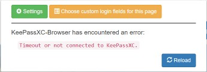 -
Open the URL for which you want to auto-populate the field values stores in your database. The KeePassXC-Browser Confirm Access window appears.
ADD NEW CONFIRM ACCESS DIALOG HERE
-
Select the entry from the window and click Allow.
-
In your website, click inside your USER ID field, and select your username, which automatically gets extracted from your KeePassXC database. The username and the password automatically get populated in the respective fields.
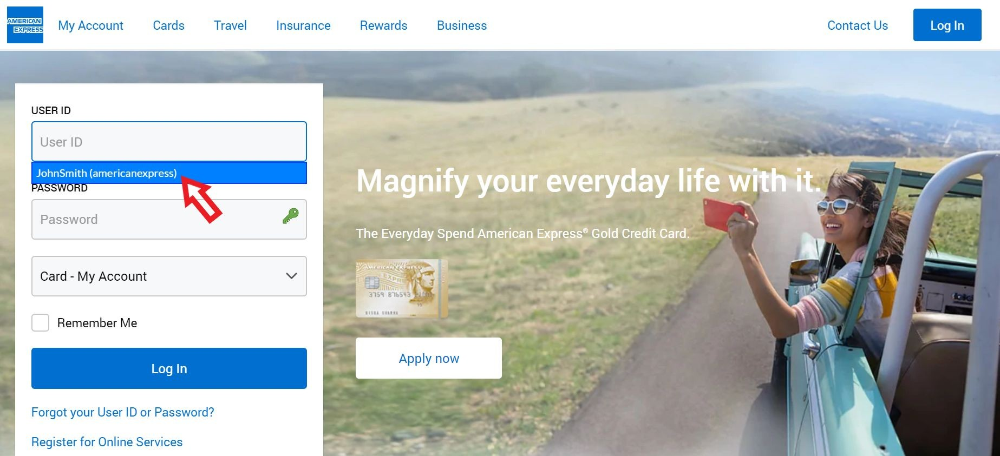
Storing Database File
The database file that you create might contain highly sensitive data and must be stored in a very secure way. You must make sure that the database is always protected with a strong and long password. The database file that is protected with a strong and long password is secure and encrypted while stored on your computer or cloud storage service.
Make sure that the database file is stored in a folder that is secure. Make sure that you or someone else does not accidentally delete the database file. Deletion of the database file results in a lot of inconvenience because you will need to manually retrieve the lost information for your various web applications. You must not share your database file with anyone unless absolutely necessary.
Backing up Database File
It is a good practice to create copies of your database file and store the copies of your database on different computer, smart phone, or cloud storage space such a Google Drive or Microsoft OneDrive.
Creating backups for your database give you a peace of mind should you lose one copy of your database. You can quickly retrieve the copy of your database and start using it.
Sharing Database File
If there is a need to share the database file with anyone, make sure that it is protected with a strong password. It is recommended that you also protect your database file with a Key file as well.
| Do not share the database file, password, and the Key File in a single communication. Send them separately through different messages. |